Linux的权限管理操作
一、权限概述
总述：Linux系统一般将文件可存/取访问的身份分为3个类别：owner（拥有者）、group（和所有者同组的用户）、others（其他人），且3种身份各有read（读）、write（写）、execute（执行）等权限。
1、权限介绍
什么是权限？
在多用户（可以不同时）计算机系统的管理中，权限是指某个特定的用户具有特定的系统资源使用权力，像是文件夹、特定系统指令的使用或存储量的限制。
在Linux中分别有读、写、执行权限：
读权限：
对于文件夹来说，读权限影响用户是否能够列出目录结构
对于文件来说，读权限影响用户是否可以查看文件内容
写权限：
对文件夹来说，写权限影响用户是否可以在文件夹下“创建/删除/复制到/移动到”文档
对于文件来说，写权限影响用户是否可以编辑文件内容
执行权限：
一般都是对于文件来说，特别脚本文件。
对于文件来说，执行权限影响文件是否可以运行。
对于文件夹来说，执行权限影响对应的用户是否可以在文件夹内执行指令。
2、身份介绍
Owner身份（文件所有者，默认为文档的创建者）
由于Linux是多用户、多任务的操作系统，因此可能常常有多人同时在某台主机上工作，但每个人均可在主机上设置文件的权限，让其成为个人的“私密文件”，即个人所有者。因为设置了适当的文件权限，除本人（文件所有者）之外的用户无法查看文件内容。
例如某个MM给你发了一封Email情书，你将情书转为文件之后存档在自己的主文件夹中。为了不让别人看到情书的内容，你就能利用所有者的身份去设置文件的适当权限，这样，即使你的情敌想偷看你的情书内容也是做不到的。
Group身份（与文件所有者同组的用户）
与文件所有者同组最有用的功能就体现在多个团队在同一台主机上开发资源的时候。例如主机上有A、B两个团体（用户组），A中有a1,a2,a3三个成员，B中有b1,b2两个成员，这两个团体要共同完成一份报告F。由于设置了适当的权限，A、B团体中的成员都能互相修改对方的数据，但是团体C的成员则不能修改F的内容，甚至连查看的权限都没有。同时，团体的成员也能设置自己的私密文件，让团队的其它成员也读取不了文件数据。在Linux中，每个账户支持多个用户组。如用户a1、b1即可属于A用户组，也能属于B用户组【主组和附加组】。
Others身份（其他人，相对于所有者与同组用户）
这个是个相对概念。打个比方，大明、二明、小明一家三兄弟住在一间房，房产证上的登记者是大明（owner所有者），那么，大明一家就是一个用户组，这个组有大明、二明、小明三个成员；另外有个人叫张三，和他们三没有关系，那么这个张三就是其他人（others）了。
同时，大明、二明、小明有各自的房间，三者虽然能自由进出各自的房间，但是小明不能让大明看到自己的情书、日记等，这就是文件所有者（用户）的意义。
Root用户（超级用户）
在Linux中，还有一个神一样存在的用户，这就是root用户，因为在所有用户中它拥有最大的权限 ，所以管理着普通用户。
3、Linux的权限介绍
要设置权限，就需要知道文件的一些基本属性和权限的分配规则。在Linux中，ls命令常用来查看文件的属性，用于显示文件的文件名和相关属性。
#ls -l 路径 【ls -l 等价于 ll】
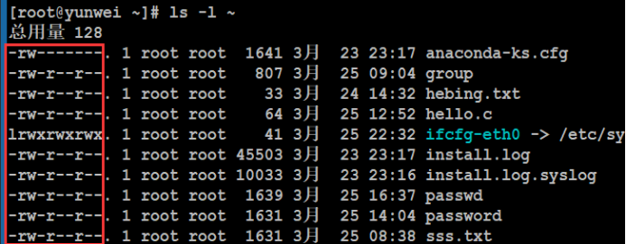
标红的部分就是Linux的文档权限属性信息。
Linux中存在用户（owner）、用户组（group）和其他人（others）概念，各自有不同的权限，对于一个文档来说，其权限具体分配如下：
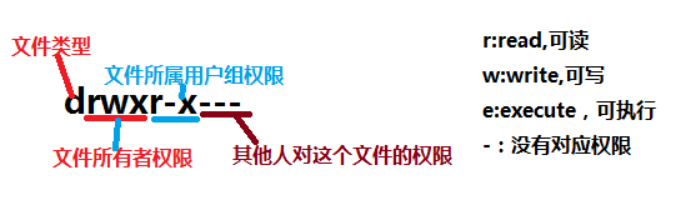
十位字符表示含义：
第1位：表示文档类型，取值常见的有“d表示文件夹”、“-表示文件”、“l表示软连接”、“s表示套接字”、“c表示字符设备”、“b表示块状设备”等等；
第2-4位：表示文档所有者的权限情况，第2位表示读权限的情况，取值有r、-；第3位表示写权限的情况，w表示可写，-表示不可写，第4位表示执行权限的情况，取值有x、-。
第5-7位：表示与所有者同在一个组的用户的权限情况，第5位表示读权限的情况，取值有r、-；第6位表示写权限的情况，w表示可写，-表示不可写，第7位表示执行权限的情况，取值有x、-。
第8-10位：表示除了上面的前2部分的用户之外的其他用户的权限情况，第8位表示读权限的情况，取值有r、-；第9位表示写权限的情况，w表示可写，-表示不可写，第10位表示执行权限的情况，取值有x、-。
注意：除了权限位上的rwx以及-之外，还有一些特殊的权限代码“s”、“t”，这些不在本次考虑范围内。
权限分配中,均是rwx的三个参数组合，且位置顺序不会变化。没有对应权限就用 – 代替。
例如：以下一个文档权限是怎么样的？
文档类型是：文件夹
所有者：读写执行权限
同组用户：读执行权限
其他人：读执行权限
管理员：全部
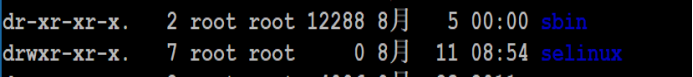
问题：yw03用户，想要看/mnt/dvd目录的权限是否可以看？
ls -l /mnt/
二、权限设置（重点）
语法：#chmod 选项 权限模式 文档
注意事项：
常用选项：
-R：递归设置权限 （当文档类型为文件夹的时候）
权限模式：就是该文档需要设置的权限信息
文档：可以是文件，也可以是文件夹，可以是相对路径也可以是绝对路径。
注意点：如果想要给文档设置权限，操作者要么是root用户，要么就是文档的所有者。
1、字母形式
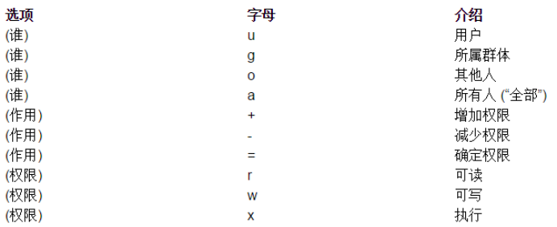
给谁设置：
u：表示所有者身份owner（user）
g：表示给所有者同组用户设置（group）
o：表示others，给其他用户设置权限
a：表示all，给所有人（包含ugo部分）设置权限
如果在设置权限的时候不指定给谁设置，则默认给所有用户设置
权限字符：
r：读
w：写
x：表示执行
-：表示没有权限
权限分配方式：
+：表示给具体的用户新增权限（相对当前）
-：表示删除用户的权限（相对当前）
=：表示将权限设置成具体的值（注重结果）【赋值】
例如：需要给/root/anaconda-ks.cfg文件（-rw-------.）设置权限，要求所有者拥有全部的权限，同组用户拥有读和写权限，其他用户只读权限。
答案：
所有者：全部权限（rwx）
同组用户：读写（rw）
其他：只读（r）
#chmod u+x,g+rw,o+r /root/anaconda-ks.cfg
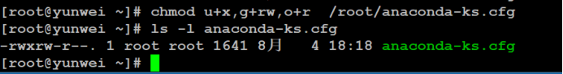
#chmod u=rwx,g=rw,o=r /root/anaconda-ks.cfg
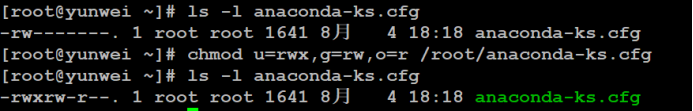
提示：当文档拥有执行权限（任意部分），则其颜色在终端中是绿色。
#chmod ug=rwx 形式，如果有两部分权限一样则可以合在一起写的
等价于：
#chmod u=rwx,g=rwx
例如：如果anaconda-ks.cfg文件什么权限都没有，可以使用root用户设置所有人都有执行权限，则可以写成
#chmod a+x anaconda-ks.cfg 等价于 #chmod +x anaconda-ks.cfg
#chmod a=x anaconda-ks.cfg
#chmod ugo=x anaconda-ks.cfg
#chmod u+x,g+x,o+x anaconda-ks.cfg
案例：设置文件“~/yunwei/yunwei.txt”权限，要求所有者全部权限，同组用户拥有读权限、写权限，其他人拥有读权限
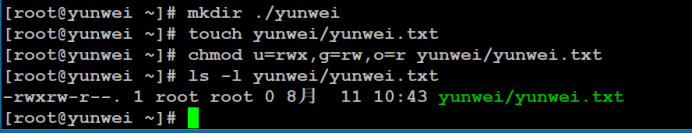
更改要求：所有者全部权限，同组用户拥有读权限、写权限，其他人拥有读权限、写权限

练习：
①设置文件夹/tmp/yunwei的权限（如果文件夹不存在，自行创建），要求权限为递归权限，并且所有者有全部权限，同组用户有读执行权限，其他用户只读权限；
#chmod -R u=rwx,g=rx,o=r yunwei/
②设置文件/tmp/yunwei/class03.sh权限，文件如果不存在则自行创建，要求权限为所有者全部权限，同组用户读和执行权限，其他用户没有权限；
# chmod u=rwx,g=rx,o-r ./yunwei/class03.sh
③使用普通用户在/tmp/yunwei目录下创建test目录，设置目录权限为所有者拥有全部权限，同组用户只读，其他用户只读；
2、数字形式
经常会在一些技术性的网页上看到类似于#chmod 777 a.txt 这样的一个权限，这种形式称之为数字形式权限（777）。
读：r 4
写：w 2
执行：x 1
没有任何权限：0
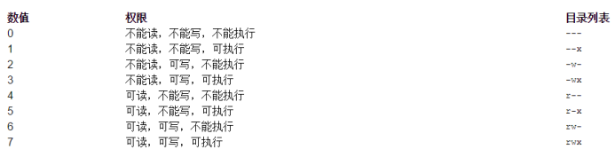
例如：需要给anaconda-ks.cfg设置权限，权限要求所有者拥有全部权限，同组用户拥有读执行权限，其他用户只读。
所有者权限 = 全部权限 = 读 + 写 +执行 = 4 + 2 + 1 = 7
同组用户权限 = 读权限 + 执行权限 = 4 + 1 = 5
其他用户权限 = 读权限 = 4
最终得出的结果是754
#chmod 754 anaconda-ks.cfg
面试题：用超级管理员设置文档的权限命令是#chmod -R 731 aaa，请问这个命令有没有什么不合理的地方？
所有者 = 7 = 4 + 2 + 1 = 读 + 写 + 执行
同组用户 = 3 = 2 + 1 = 写 + 执行
其他用户 = 1 = 执行
问题在权限731中3表示写+执行权限，但是写又不必须需要能打开之后才可以写，因此必须需要具备读权限，因此权限不合理。以后建议各位在设置权限的时候不要设置这种“奇葩权限”。单独出现2、3的权限数字一般都是有问题的权限
注意：在写权限的时候千万不要设置类似于上面的这种“奇葩权限”。如果一个权限数字中但凡出现2与3的数字，则该权限有不合理的情况。
练习：
①使用root用户设置文件夹/root/20180811的权限为：所有者全部权限，同组用户拥有读和执行权限，其他用户没有权限，请使用数字权限的形式设置，写出指令；750
②请使用root用户写出设置文件/root/20180811.txt文件的权限，权限要求为：所有者拥有全部权限，同组用户要求可以读写，其他用户只读，要求使用数字形式；764
③张三疯（root）收到某个MM的情书，请使用数字形式设置张三疯的Email情书权限（文件为/root/email.doc），权限要求只有所有者可以读写，除此之外任何人没有权限；600
3、注意事项
使用root用户创建一个文件夹（/oo），权限默认，权限如下：
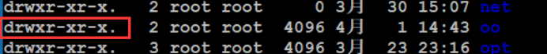
需要在oo目录下创建文件（oo/xx.txt），需要给777权限：
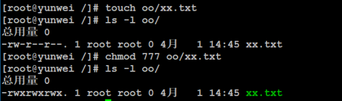
切换到yw03用户（不是文档所有者，也不是同组用户，属于other部分）：
问题1：yw03用户是否可以打开oo/xx.txt文件？【能打开】
问题2：yw03用户是否可以编辑oo/xx.txt文件？【可以】
问题3：yw03用户是否可以删除oo/xx.txt文件？【不能】
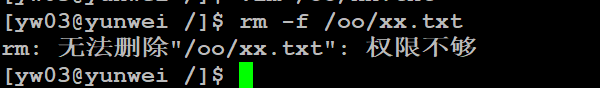
在Linux中，如果要删除一个文件，不是看文件有没有对应的权限，而是看文件所在的目录是否有写权限，如果有才可以删除。
三、属主（zhu）与属组（zu）设置
属主：所属的用户（文件的主人），文档所有者
属组：所属的用户组
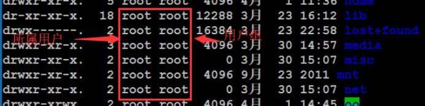
前面的那个root就是属主
后面的那个root就是属组
这两项信息在文档创建的时候会使用创建者的信息（用户名、用户所属的主组名称）。
之所以需要设置这个：如果有时候去删除某个用户，则该用户对应的文档的属主和属组信息就需要去修改（类似离职之前的工作交接）。
1、chown（重点）
作用：更改文档的所属用户（change owner）
语法：#chown -R 新的username 文档路径
案例：将先前设置的/oo目录的所有者设置成成yw03
#chown -R yw03 /oo
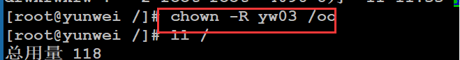
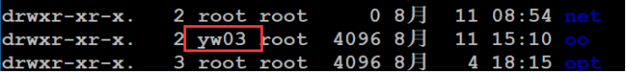
2、chgrp（了解）
作用：更改文档的所属用户组（change group）
语法：#chgrp -R groupname 文档的路径
案例：将刚才oo目录的所有用户组名改为yw03
#chgrp -R yw03 /oo
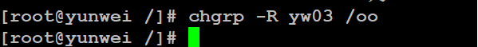
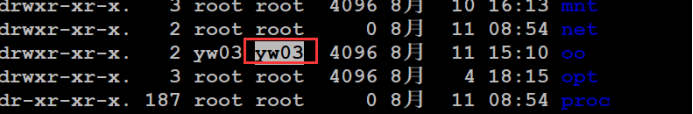
思考，如何通过一个命令实现既可以更改所属的用户，也可以修改所属的用户组呢？
答：可以实现的，通过chown命令
语法：#chown -R username:groupname 文档路径
案例：将刚才oo的文档的所属组所属用户修改为root
#chown -R root:root /oo
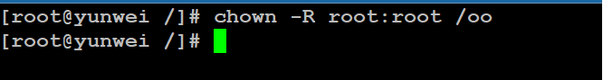
问题：zhangsan用户使用自己的帐号创建文件index.html，并且当时默认的权限是644，后续管理员root将该文件的属主改成了lisi，属组改成lisi，则zhangsan对文件的操作权限有变化吗？如果有权限是多少？（zhangsan和lisi不同组）
答：虽然没有直接改权限，但是由于更改了属组和属主，则会间接的对zhangsan的权限产生影响。最新的权限是4（读）。
四、扩展（1）
问题：reboot、shutdown、init、halt、user管理，在普通用户身份上都是操作不了，但是有些特殊的情况下又需要有执行权限。又不可能让root用户把自己的密码告诉普通用户，这个问题该怎么解决？
该问题是可以被解决的，可以使用sudo（switch user do）命令来进行权限设置。Sudo可以让管理员（root）事先定义某些特殊命令谁可以执行。
默认sudo中是没有除root之外用户的规则，要想使用则先配置sudo。
Sudo配置文件：/etc/sudoers
该文件默认只读，不允许修改，因此不能直接修改。
a. 配置sudo文件请使用“#visudo”，打开之后其使用方法和vim一致
b. 配置普通用户的权限
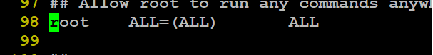
Root表示用户名，如果是用户组，则可以写成“%组名”
ALL：表示允许登录的主机（地址白名单）
(ALL)：表示以谁的身份执行，ALL表示root身份
ALL：表示当前用户可以执行的命令，多个命令可以使用“,”分割
案例：创建test用户，本身test用户不能添加用户，要求使用sudo配置，将其设置为可以添加用户。
添加test用户：
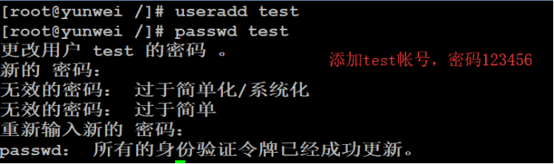
注意：在写sudo规则的时候不建议写直接形式的命令，而是写命令的完整路径。
路径可以使用which命令来查看
语法：#which 指令名称
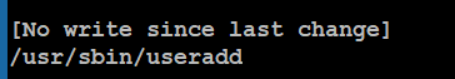
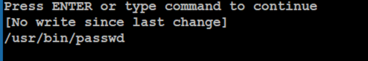
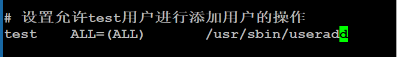
在添加好对应的规则之后就可以切换用户，切换到普通用户test，再去执行：
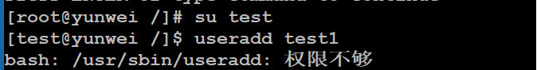
此时要想使用刚才的规则，则以以下命令进行：
#sudo 需要执行的指令
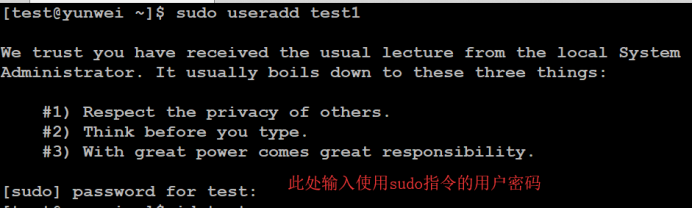
在输入sudo指令之后需要输入当前的用户密码进行确认的操作（不是root用户密码），输入之后在接下来5分钟内再次执行sudo指令不需要密码。
如果要删除用户则会提示：
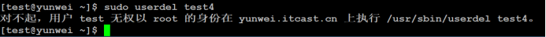
因此要想实现删除则必须先配置sudo规则
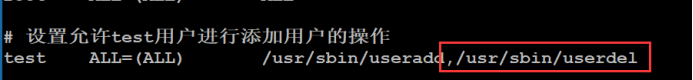
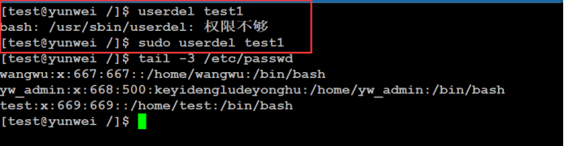
补充：在普通用户下怎么查看自己具有哪些特殊权限呢？
#sudo -l 表示list
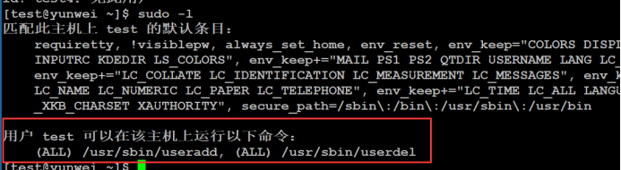
最后：sudo不是任何Linux分支都有的命令，常见centos与ubuntu都存在sudo命令。
作业：
①给普通用户test设置一个关机命令执行权限。
②（难）设置允许test可以修改其他用户的密码，但是除了root用户；【不能可以用“!”】
/usr/bin/passwd *,!/usr/bin/passwd root
软连接：就是相当于windows下面的快捷方式
Ln -s
-s:指定源文件是谁 后面接 连接目标文件
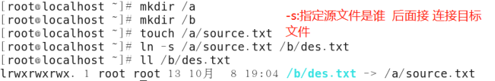
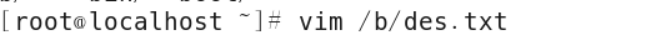
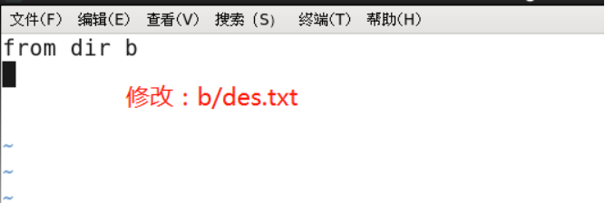
接下来查看源文件里面会不会发生变化？
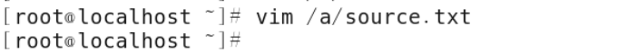
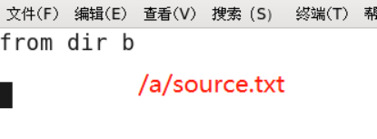
第二步：修改原文件
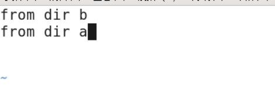
查看目标文件有没有发生变化：
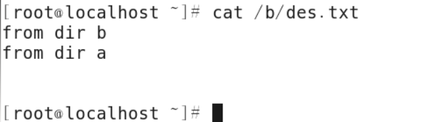
删除目标文件：相当于删除快捷方式，对源文件没有丝毫影响
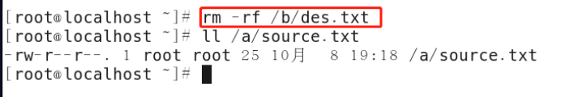
现在删除源文件看效果：
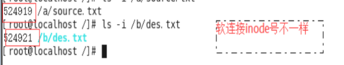
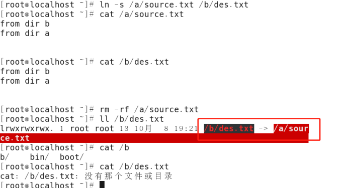
总结：
软连接
Ln - s 原路径 目标路径
特点：
1、就是相当于win中的快捷方式
2、删除链接文件，源文件无影响
3、删除源文件，链接文件失效
4、修改源文件\链接文件，内容都发生改变
硬链接：
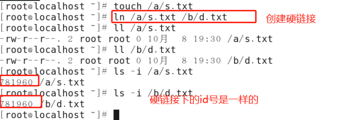
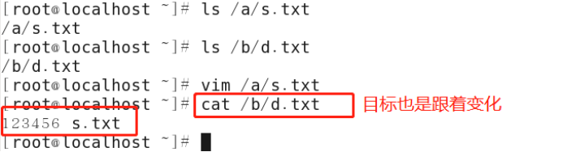
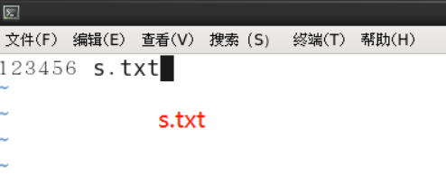
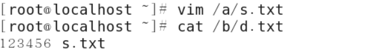
修改目标文件，并查看是否发生变化
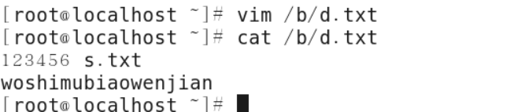
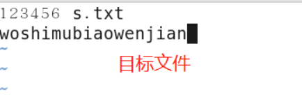
删源文文件：
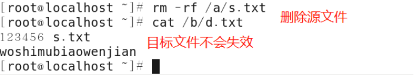
硬链接
ln 源路径 目标路径
特点：
1、删除链接文件，源文件无影响
2、删除源文件文件，链接件无影响
3、修改源文件\链接文件，内容都 发生改变。
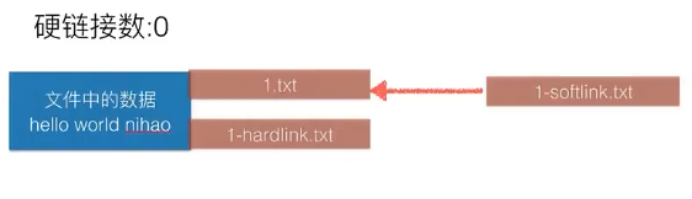
>表示覆盖内容：
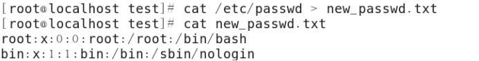
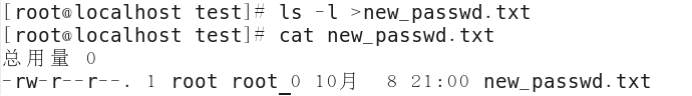
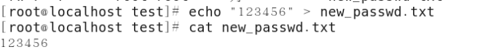
>>:表示追加
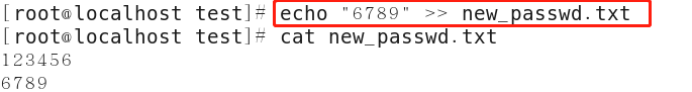
2. 归档文件和归档技术
1) 掌握归档的定义：归档（archiving）就是将许多文件（或目录）打包成一个文件。
2) 了解归档的目的：归档的目的就是方便备份、还原及文件的传输操作。
3) 掌握tar命令的功能：将多个文件（也可能包括目录，因为目录本身也是文件）放在一起存放到一个磁带或磁盘归档文件中。并且将来可以根据需要只还原归档文件中的某些指定的文件。
4) 掌握tar命令的常用选项：
c：创建一个新的tar文件。
t：列出tar文件中目录的内容。
x：从tar文件中抽取文件。
f：指定归档文件或磁带（也可能是软盘）设备（一般都要选）。
v：显示所打包的文件的详细信息，v是verbose的第1个字母。
z：使用gzip压缩算法来压缩打包后的文件。
j：使用bzip2压缩算法来压缩打包后的文件
解压：
-C表示指定目录
压缩：
4、文件的压缩和解压缩
1) 掌握压缩的定义：压缩就是将一个大的文件通过一些压缩算法变成一个小文件。
2) 了解压缩的目的：主要是缩小文件的大小，这样会节省存储文件的磁盘或磁带的空间，另外在网络上传输这些小文件也会减少网络的浏览（也就是节省网络的带宽）。
3) 掌握解压缩的定义：解压缩就是将一个通过一些压缩算法的文件恢复到压缩之前的样子。
4) 掌握gzip命令和gunzip命令的用法举例：
a) 例如：将文件file1压缩成.gz格式的压缩包应该使用的命令为：gzip file1 –c > /路径/name.gz
b) 例如：将压缩文件file1.gz解压缩的命令为：
gunzip file1.gz >
5) 掌握bzip2命令和bunzip2命令的用法举例：
a) 例如：将文件file1压缩成.bz2格式的压缩包应该使用的命令为：bzip2 file1 >
b) 例如：将压缩文件file1.bz2解压缩的命令为：
bunzip2 file1.bz2 >
5. 在使用tar命令的同时进行压缩和解压缩（详见linux系统管理P214）
1) 掌握在使用tar命令的同时进行压缩和解压缩的用法举例
a) 例如：使用tar命令将arch目录打包而且同时使用gzip的技术压缩打包后文件的方法（打包后的文件名为arch.tar.gz）：
tar cvfz arch.tar.gz arch
b) 例如：使用tar命令将arch目录打包而且同时使用bzip2的技术压缩打包后文件的方法（打包后的文件名为arch.tar.bz2）：tar cvfj arch.tar.bz2 arch
6. 课后作业（用时65分钟）
1) 将用户信息数据库文件和组信息数据库文件纵向合并为一个文件/1.txt（覆盖）
2) 将用户信息数据库文件和用户密码数据库文件纵向合并为一个文件/2.txt（追加）
3) 将/1.txt、/2.txt两个文件打包为/1.tar
4) 使用gzip命令压缩1.txt文件名为1.txt.gz
5) 解压缩1.txt.gz
6) 使用bzip2压缩1.txt压缩后文件名为1.txt.bz2
7) 解压缩1.txt.bz2
8) 解包1.tar，解包后文件存放到/tmp目录下
9) 使用tar命令打包并且压缩/1.txt、/2.txt，得到的文件名为1.tar.gz
10) 解包1.tar.gz，解包后文件存放到/tmp目录下
第二种方式：
Tar命令：
扩展：解包
常用语法：
#tar -zxvf *.tar.gz （大多数）
#tar -jxvf *.tar.bz2
选项含义：
-z或--gzip或--ungzip：通过gzip指令处理文件；
-x或--extract或--get：从文件中还原文件；
-v：显示操作过程【可选】；
-f或--file：指定一个文件；
-j：支持bzip2解压文件；